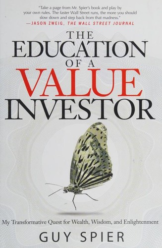

2008年6月25日，纽约史密斯与沃伦斯基牛排馆，Guy Spier与投资人莫尼什·帕伯莱（Mohnish Pabrai）一起请沃伦·巴菲特吃午饭——这顿饭是两人在eBay慈善拍卖中合计出价65万零100美元竞得的，全部收益捐给旧金山反贫困机构Glide Foundation，帕伯莱出了约三分之二（约43.3万美元），斯皮尔出了约三分之一（约21.7万美元）。这顿午餐后来成了《The Education of a Value Investor》一书的核心场景，也是斯皮尔投资生涯的转折点之一。该书由Palgrave Macmillan于2014年9月9日出版，224页精装，中文版《与巴菲特共进午餐时，我顿悟到的5个真理：探寻财富、智慧与价值投资的转变之旅》由张尧然、杨颖玥翻译，中国青年出版社2015年7月推出。
斯皮尔本科在牛津大学布雷齐诺斯学院就读，从法律转读哲学、政治与经济学（PPE），并以经济学最优成绩获乔治·韦伯·梅德利奖；1993年从哈佛商学院毕业，同班同学包括后来创立Zynga的马克·平卡斯（Mark Pincus）。毕业后他没有进高盛或摩根大通——虽然都拿到了面试机会——而是被D.H. Blair公司董事长J·莫顿·戴维斯招揽加入这家华尔街小型券商。他在书中把这段经历形容为"蛇窝"（snake pit）：D.H. Blair后来因股票欺诈被美国证券交易委员会调查关停，比他离职晚了大约五年，而这段履历也让他在精英投行眼中成了"damaged goods"（有污点的人）。1997年9月15日，他用主要来自家人和朋友的约1500万美元创立了Aquamarine Fund。
全书十三章，从"From the Belly of the Beast to Warren Buffett"写到"Lunch with Warren"，再到"My Own Version of Omaha: Creating the Ideal Environment"——斯皮尔在这一章记录了自己从纽约搬到苏黎世的决定：他认为华尔街的"漩涡"（Vortex）会持续侵蚀判断力，于是仿照巴菲特留守奥马哈，主动把自己放进信息噪音更少的环境。他给自己制定八条规则，包括不让有销售动机的人推介股票、不与公司管理层交谈后立即下注、只与没有利益冲突的人讨论想法、市场交易时段不下买卖决定，以及买入后若价格下跌，至少两年内不因恐慌卖出。另一章"An Investor's Checklist: Survival Strategies from a Surgeon"借用外科医生阿图·葛文德（Atul Gawande）的清单方法，把反复出现的错误转成可勾选的问题：这项投资是否为了证明过去的决定正确，管理层的激励是否鼓励短期粉饰，自己是否因熟人持有而降低了证据标准。规则未必适合所有基金，却明确展示了他如何用流程对抗从众、行动偏好和权威偏见。
斯皮尔还坦白写下与帕伯莱的模仿关系，把"Doing Business the Buffett-Pabrai Way"直接用作倒数第二章标题。这里的模仿不是照抄股票，而是复制能产生较好行为的环境、伙伴和例行程序。《华尔街日报》专栏作者杰森·茨威格（Jason Zweig，格雷厄姆版《聪明的投资者》的注释者）在书封上写道："照斯皮尔书里说的，按自己的规矩来。华尔街跑得越快，你就越该放慢脚步，从那种疯狂里退后一步"（Take a page from Mr. Spier's book and play by your own rules. The faster Wall Street runs, the more you should slow down and step back from that madness）。这本书没有选股公式或估值模型，午餐也不只是一则见名人的轶事；它记录斯皮尔怎样承认职业选择和投资错误，再通过搬家、同伴、规则与清单重塑决策条件。书名里的"教育"，指对投资者本人的重新训练，而不是对市场走势的分析训练。它是基金经理的第一人称复盘，适合检验个人流程，不应被误读成这些规则已经接受过普遍的业绩归因检验。规则是否有用，仍要靠读者记录执行前后的错误率来判断，并定期复盘。